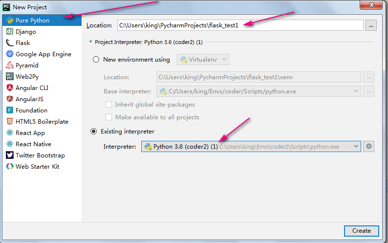
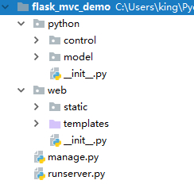
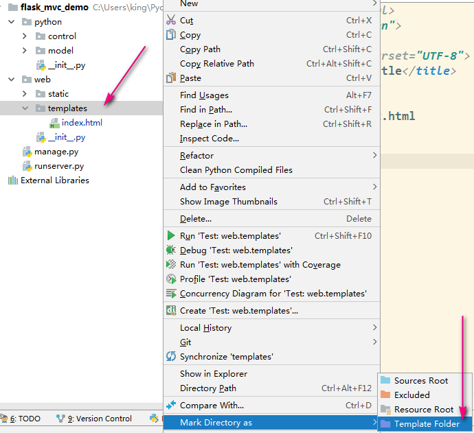
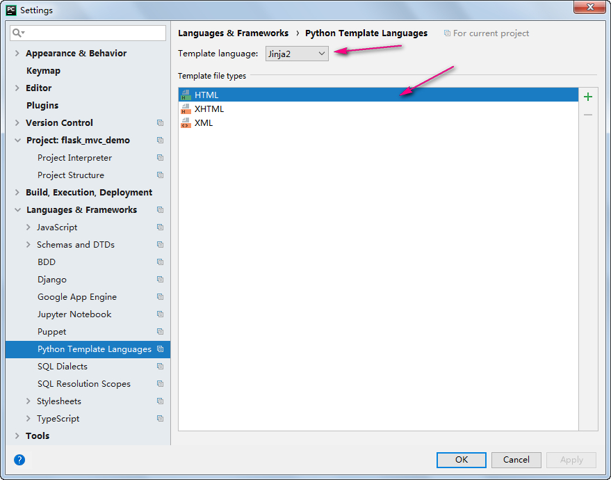
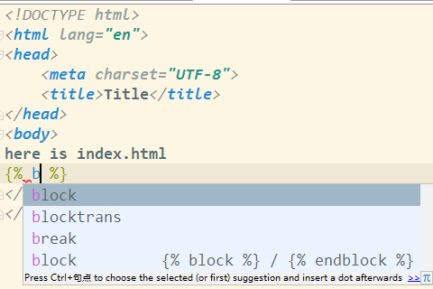
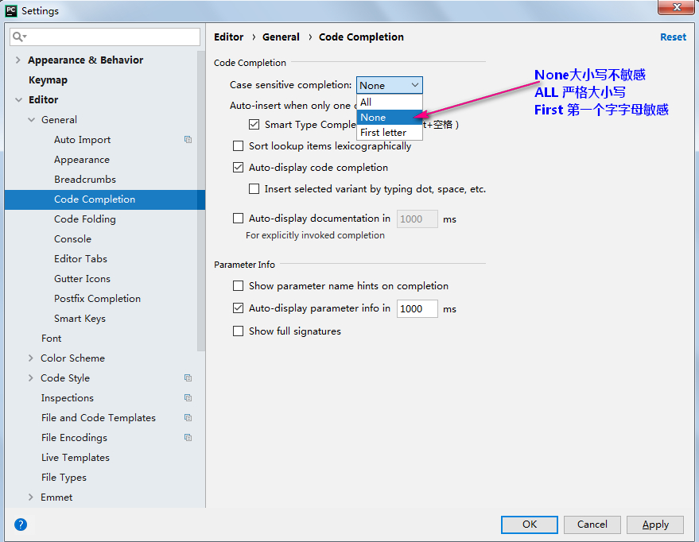
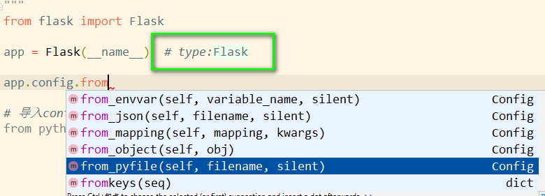

pycharm创建Flask项目,jinja自动补全,flask智能提示
pycharm创建Flask项目,jinja自动补全,flask智能提示
之前一直都是用在idea里创建空项目然后导入，之后就没有各种的智能提示，在选择文类，选择模板之类的地方就会很麻烦。
步骤1：用pycharm创建空项目
我这里是选择了python虚拟环境...不用虚拟环境的正常选系统python环境就可以...这个无所谓了..

步骤2：补全项目结构
这一步也无所谓...我也不太会python,也不知道标准的结构是什么样子的...只是为了我以后快速实现方便...请跳过直接看第3步.
该demo代码，我的github地址：https://github.com/GoldArowana/flask_mvc_demo
下载后可能需要重新指定python运行环境

步骤3：jinja自动补全
将templates标记为模板文件夹。被标记后，模板文件夹会变为淡紫色的。

此时可能会提示‘您未指定模板语言’的英文提示，进一步来选择模板语言。也有可能不提示...不提示一般就是默认选好了。可以手动进设置里确认一下。

可以看到jinja能自动补全了

步骤4：智能提示大小写敏感，None忽略大小写

步骤5：flask智能提示
进入到web/__init__.py文件，在后面添加类型注解 # type：相应的类型
下面以Flask实例的对象app为例,当输入到'app.'就开始智能提示了。(加类型注解之前就什么都不提示)

flask标注类型的更多方式请看这里：http://blog.csdn.net/nima1994/article/details/70344682
pycharm创建Flask项目,jinja自动补全,flask智能提示的更多相关文章
- pycharm中tensorflow代码不能自动补全或import红线问题解决
正确安装并配置好pycharm+tensorflow环境之后,可能在pycharm中导入tensorflow会有以下问题: 1. " import tensorflow as tf &quo ...
- VSCode插件开发全攻略（五）跳转到定义、自动补全、悬停提示
更多文章请戳VSCode插件开发全攻略系列目录导航. 跳转到定义 跳转到定义其实很简单,通过vscode.languages.registerDefinitionProvider注册一个provide ...
- 第一百八十一节，jQuery-UI，知问前端--自动补全 UI--邮箱自动补全
jQuery-UI,知问前端--自动补全 UI--邮箱自动补全 学习要点: 1.调用 autocomplete()方法 2.修改 autocomplete()样式 3.autocomplete()方法 ...
- PyCharm编辑HTML文件时输入{%不能自动补全
在PyCharm编辑HTML文件时输入Django模板语言时,发现录入 {% 不能自动补全. 找了一下,发现 setting 里可以设置 Python Template Languages,选择自己使 ...
- pycharm 中自动补全代码提示前符号 p，m ，c，v, f 是什么意思
是自动补全的变量的类别p:parameter 参数m:method 方法c:class 类 v:variable 变量f:function 函数
- ZeroBrane Lua脚本编辑器代码自动补全
简介 ZeroBrane Studio是一款支持代码提示.语法高亮.远程调试.代码分析.调试等功能的轻量级Lua IDE工具.可以去官网studio.zerobrane.com进行下载 ...
- 练习笔记:net,JqueryUI实现自动补全功能
1.首先建立个空的Web项目 2.将下载好的JqueryUI文件保存到JS文件加下 3.引入JS文件 <link href="JS/css/ui-lightness/jquery-ui ...
- 使用DWR实现自动补全 类似百度搜索框的自动显示效果
使用DWR实现自动补全 自动补全:是指用户在文本框中输入前几个字母或汉字的时候,自动在存放数据的文件或数据库中将所有以这些字母或汉字开头的数据提示给用户供用户选择 在日常上网过程中,我们经常使用搜索引 ...
- jquery的输入框自动补全功能+ajax
jquery的输入框自动补全功能+ajax 2017年05月10日 18:51:39 辣姐什么鬼 阅读数:1461 标签: web前端 更多 个人分类: web前端 内容参考网友文章写成,原博的链 ...
随机推荐
- 子div设置float后导致父div无法自动撑开的问题
子div设置float后会导致父div无法自动撑开 原因:内部的DIV因为float:left之后,就丢失了clear:both和display:block的样式,所以外部的DIV不会被撑开. 以下是 ...
- BZOJ 4580: [Usaco2016 Open]248
Description 一个序列,每次可以把相邻的两个数合为一个,价值+1,求最后的最大价值. Sol 区间DP. \(f[i][j]\) 表示 \(i-j\) 中合成一个数字为多少,转移就是枚举断点 ...
- [AX2012 R3]在SSRS报表中使用QR二维码
AX2012是自带生成QR二维码的类,可以很方便的用在SSRS报表中,下面演示如何在RDP的报表中使用二维码,首先从定义临时表开始: 字段URL是要用于二维码的字符串,QrCode是container ...
- Linux提示no crontab for root的解决办法
Linux提示no crontab for root的解决办法 安装crontab:yum install crontabs 说明:/sbin/service crond start //启动服务/s ...
- 在C#中对Datatable排序【DefaultView的Sort方法】
在C#中对Datatable排序,[DefaultView的Sort方法] 代码如下: DataTable dt = new DataTable(); dt.Columns.Add("ID& ...
- 整理的Unity导出安卓工程利用ANT进行多渠道批量打包APK
Unity导出的安卓工程利用ant进行多渠道循环批量打包 一:设置JAVA环境变量 做android开发的配置这个是基础. win7 下配置java环境变量,下面是链接 http://www.cnbl ...
- Xcode中的Info.plist字段列表详解
Info.plist用于向iOS提供关于app,bundle或者framework的一些重要信息.它指定了比如一个应用应该怎样启动,它如何被本地化,应用的名称,要显示的图标,还有更多.Info.pli ...
- php5.3 不支持 session_register() 此函数已启用的解决方法
php从5.2.x升级到5.3.2.出来问题了.有些原来能用的程序报错了,Deprecated: Function session_register() is deprecated php从5.2.x ...
- java调试一
Eclipse 平台的特色在于内置了 Java 调试器,该调试器提供所有标准调试功能,包括进行单步执行.设置断点和值.检查变量和值以及暂挂和恢复线程的能力.Eclipse 平台工作台(Eclipse ...
- 读Zepto源码之Event模块
Event 模块是 Zepto 必备的模块之一,由于对 Event Api 不太熟,Event 对象也比较复杂,所以乍一看 Event 模块的源码,有点懵,细看下去,其实也不太复杂. 读Zepto源码 ...